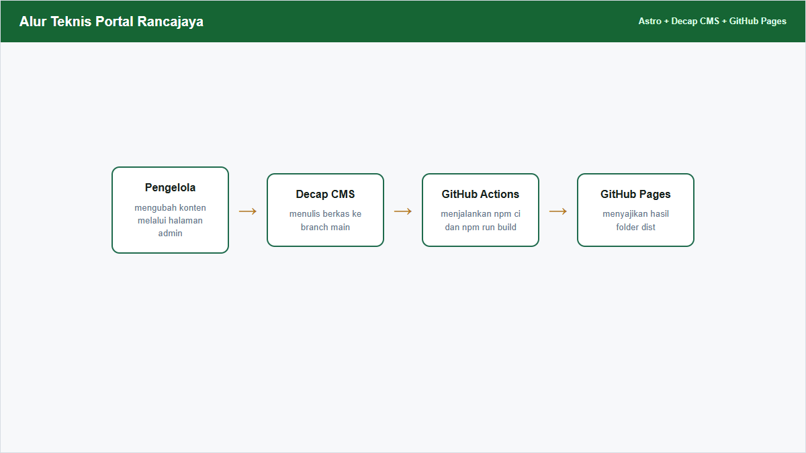

Panduan Pengembangan
Arsitektur, Ekstensi, dan Pemeliharaan Portal
Panduan teknis untuk memahami, memperluas, memelihara, dan memulihkan Portal Desa Rancajaya.
Ditujukan untuk: Pengembang dan PIC Teknis Portal Rancajaya
Bantuan teknis: Daffa via WhatsApp
Disusun oleh: KKN-T IPB 2026
Versi: Agustus 2026
Arsitektur dan Alur Publikasi
Portal Rancajaya adalah website statis berbasis Astro. Konten dikelola sebagai berkas Markdown dan JSON di GitHub; tidak ada server aplikasi atau database produksi.

| Tahap | Tanggung jawab |
|---|---|
| Decap CMS | Menulis perubahan konten sebagai commit Git |
| GitHub | Menyimpan kode, konten, aset, dan riwayat |
| GitHub Actions | Memasang dependency, memvalidasi konten, dan membangun dist |
| GitHub Pages | Menyajikan hasil statis kepada pengunjung |
| Netlify | Hanya meneruskan OAuth untuk proses masuk GitHub |
Stack dan Alasan Pemilihan
| Komponen | Peran dan alasan |
|---|---|
| Astro 5 | Routing berbasis berkas dan keluaran statis; sesuai untuk portal informasi dengan JavaScript minimum |
| Tailwind CSS 3 | Token desain dan kelas utilitas yang konsisten tanpa framework UI tambahan |
| Content Collections + Zod | Validasi struktur Markdown/JSON saat build sebelum perubahan tayang |
| Decap CMS 3 | Antarmuka pengelolaan berbasis Git tanpa database CMS |
| Chart.js 4 | Grafik APBDes dan demografi dari data yang sudah tersedia di halaman |
| GitHub Actions + Pages | Build dan hosting produksi gratis dalam satu riwayat repository |
| Netlify | OAuth proxy saja; bukan hosting produksi |
Repository resmi: https://github.com/portalrancajaya/portalrancajaya.github.io
Situs produksi: https://portalrancajaya.github.io.
Struktur Repository
src/pages/ rute: beranda, profil, informasi, potensi, layanan
src/components/ Navbar, Footer, Seo, kartu, dan Hero
src/layouts/Layout.astro shell halaman dan metadata global
src/content/ koleksi Markdown serta data JSON
src/content/config.ts skema Zod seluruh konten
src/styles/global.css kelas komponen dan gaya dasar
src/utils/content.ts publikasi, URL aset, WhatsApp, formulir, peta
public/admin/config.yml collection dan field Decap CMS
public/admin/index.html halaman masuk dan akses panduan
public/images/ gambar publik dan hasil unggahan
public/vendor/ Chart.js yang dilayani lokal
.github/workflows/ build dan deploy GitHub PagesAlur Data dan Model Konten
Konten collection disimpan sebagai Markdown, sedangkan pengaturan dan teks halaman tunggal disimpan sebagai JSON. Halaman mengambil data melalui getCollection atau getEntry lalu memfilter status publikasi.
| Kelompok data | Sumber | Konsumen utama |
|---|---|---|
| Berita | src/content/berita/*.md | Beranda dan halaman Informasi |
| APBDes | src/content/apbdes/*.md | Profil dan grafik riwayat APBDes |
| Potensi | potensi-statistik, kelompok-tani, produksi-pertanian | Halaman Potensi |
| UMKM dan galeri | src/content/umkm serta galeri | Beranda, Potensi, dan Informasi visual |
| Struktur dan dusun | struktur-organisasi serta dusun | Halaman Profil |
| Layanan dan kontak | layanan-administrasi serta kontak | Beranda dan Layanan |
| Pengaturan | pengaturan/umum.json | Navbar, Footer, peta, dan identitas desa |
| Halaman | halaman/*.json | Teks khusus Beranda, Profil, Potensi, dan Layanan |
| Status | Perilaku |
|---|---|
| release_status: Draf | isPublishedContent mengembalikan false |
| release_status: Terbit | konten boleh ditampilkan |
| release_status: Siap | nilai lama yang tetap dianggap tampil |
| aktif: false | konten selalu disembunyikan |
Menjalankan Proyek Secara Lokal
- Gunakan Node.js 20 atau versi kompatibel.
- Clone repository dan masuk ke folder portalrancajaya.github.io.
- Jalankan npm ci agar dependency mengikuti package-lock.json.
- Jalankan npm run dev.
- Buka http://localhost:4321/.
- Jalankan npm run build dan npm run preview sebelum commit.
git clone https://github.com/portalrancajaya/portalrancajaya.github.io.git
cd portalrancajaya.github.io
npm ci
npm run dev
npm run build
npm run previewMenambah Halaman Baru
- Buat file .astro di src/pages; nama folder atau file menentukan URL.
- Gunakan Layout dari src/layouts/Layout.astro.
- Isi title dan description lokal serta schema JSON-LD bila relevan.
- Gunakan getCollection/getEntry untuk data dan isPublishedContent untuk collection publik.
- Gunakan resolvePublicPath untuk gambar dari konten.
- Tambahkan navigasi di src/components/Navbar.astro dan Footer.astro bila halaman memang publik.
- Uji desktop, ponsel, tautan aktif, base path, lalu jalankan npm run build.
---
import Layout from '../layouts/Layout.astro';
const base = import.meta.env.BASE_URL.replace(/\/$/, '');
---
<Layout title="Judul Halaman" description="Deskripsi lokal">
<main class="section">...</main>
</Layout>Menambah atau Mengubah Collection
- Definisikan atau ubah schema Zod di src/content/config.ts.
- Daftarkan collection pada export collections di file yang sama.
- Buat folder konten dan satu contoh berkas yang valid.
- Tambahkan collection serta field yang identik di public/admin/config.yml.
- Atur create, delete, identifier_field, summary, dan slug sesuai kebutuhan.
- Sesuaikan komponen atau halaman yang membaca data.
- Jalankan npm run build, lalu uji tambah dan edit melalui admin.
const contohCollection = defineCollection({
type: 'content',
schema: z.object({
nama: z.string(),
urutan: z.number(),
...publicationFields,
}),
});Menambah Visualisasi Data
Padanan fitur infografis pada Portal Rancajaya adalah grafik demografi dan APBDes di src/pages/profil.astro. Chart.js dilayani lokal dari public/vendor/chart.umd.js.
- Tentukan sumber data dan satuan yang akan divisualisasikan.
- Validasi field sumber di src/content/config.ts dan CMS jika datanya dapat diedit.
- Ubah data menjadi array label/value di frontmatter halaman.
- Tambahkan canvas dengan id unik, role img, dan aria-label yang menjelaskan grafik.
- Muat chartScriptUrl satu kali dan buat grafik setelah DOMContentLoaded.
- Sediakan angka ringkas, legenda teks, atau tabel agar informasi tidak hanya bergantung pada grafik.
- Uji kondisi data kosong, banyak kategori, layar kecil, dan pergantian periode.
const chartScriptUrl = `${import.meta.env.BASE_URL.replace(/\/$/, '')}/vendor/chart.umd.js`;
<canvas id="chartBaru" role="img" aria-label="Deskripsi grafik"></canvas>
<script is:inline src={chartScriptUrl}></script>Mengubah Design System
Token utama berada di tailwind.config.mjs, sedangkan pola komponen berulang berada di src/styles/global.css. Perubahan token harus lebih dahulu dipilih daripada mengganti warna satu per satu di halaman.
| Bagian | Lokasi dan isi |
|---|---|
| Warna | primary, gold, ink, muted, paper, dan line di tailwind.config.mjs |
| Font | Lexend untuk display; Plus Jakarta Sans/Inter untuk body |
| Radius | 2xl, xl, lg, md, dan pill |
| Kartu | .card, .card-hover, .stat-card, .stat-card-dark |
| Tombol | .btn-primary, .btn-gold, .btn-outline, .btn-ghost |
| Label | .pill, .pill-primary, .pill-gold, .eyebrow |
| Tata letak | .container-page, .section, .section-header, .section-title |
- Ubah token atau kelas dasar.
- Cari warna atau ukuran hardcoded yang perlu dinormalisasi.
- Periksa kontras teks, focus state, dan ukuran target sentuh.
- Uji Beranda, Profil, Informasi, Potensi, Layanan, serta admin pada desktop dan ponsel.
- Jalankan npm run build.
Konfigurasi CMS dan Publikasi
Decap CMS memakai backend GitHub pada branch main dan OAuth proxy Netlify. Editorial Workflow tidak diaktifkan; status Draf/Terbit berasal dari field konten Portal Rancajaya.
backend:
name: github
repo: portalrancajaya/portalrancajaya.github.io
branch: main
base_url: https://api.netlify.com
auth_endpoint: auth| Operasi | Collection |
|---|---|
| Tambah + edit | berita, APBDes, statistik potensi, kelompok tani, produksi, UMKM, layanan, kontak, galeri |
| Edit saja | struktur organisasi, dusun, pengaturan umum, halaman website |
| Hapus | dinonaktifkan pada seluruh collection |
- Jaga urutan field agar mudah dipakai pengelola.
- Berikan hint dan pola nilai untuk field yang rawan salah.
- Jangan menyimpan rahasia, token, atau data pribadi pada config maupun konten.
- Perubahan config CMS harus diuji bersama schema Zod dan contoh konten.
Aset, Base Path, dan URL
Repository sudah memakai GitHub Pages user site: https://portalrancajaya.github.io dengan base '/'. Path aset CMS melalui public_folder harus mengikuti base produksi.
- Gunakan resolvePublicPath untuk path gambar dari Markdown atau JSON.
- Gunakan import.meta.env.BASE_URL untuk aset statis yang dirangkai di kode.
- Jangan menambahkan prefix repository pada URL aset atau tautan internal.
- Periksa gambar, favicon, vendor Chart.js, halaman admin, dan tautan unduhan panduan setelah perubahan base.
- Pertahankan nama berkas sederhana, format web, dan ukuran yang wajar.
SEO dan Data Terstruktur
Seo.astro dan Layout.astro menjadi pusat title, description, canonical URL, Open Graph, favicon, sitemap, serta JSON-LD profil desa.
- Berikan title dan description berbeda pada setiap halaman.
- Gunakan kata kunci lokal secara alami: Desa Rancajaya, Patokbeusi, Subang, Jawa Barat.
- Pastikan canonical dan sitemap memakai alamat produksi yang benar.
- robots.txt harus mengizinkan halaman publik dan tidak perlu mengindeks /admin.
- JSON-LD hanya memuat identitas, alamat, dan koordinat yang telah diverifikasi.
- Gunakan alt text yang menjelaskan isi gambar, bukan nama file.
Deployment dan CI/CD
Workflow .github/workflows/deploy.yml berjalan pada push ke main atau workflow_dispatch.
checkout -> setup-node 20 -> npm ci -> npm run build
-> upload-pages-artifact ./dist -> deploy-pages- Push perubahan ke branch yang dituju.
- Buka tab Actions dan periksa workflow terbaru.
- Jika build gagal, buka job Build with Astro dan baca error pertama yang relevan.
- Perbaiki sumber di repository lalu push commit baru.
- Setelah deploy, uji halaman publik, admin, gambar, sitemap, dan unduhan panduan.
OAuth dan Akses Admin
Pengguna Decap CMS memerlukan akun GitHub dengan akses tulis ke repository. Netlify meneruskan OAuth melalui base_url dan auth_endpoint.
- Gunakan akun resmi desa sebagai pemilik utama jika memungkinkan.
- Aktifkan 2FA pada GitHub dan Netlify.
- Pastikan callback OAuth mengikuti alamat admin produksi.
- Cabut akses anggota yang tidak lagi bertugas.
- Jangan menaruh token, password, client secret, atau recovery code di repository maupun panduan.
- Catat pemilik repository, OAuth app, Netlify site, domain, dan kontak pemulihan di penyimpanan internal desa.
Keterbatasan dan Utang Teknis
| Keterbatasan | Dampak dan mitigasi |
|---|---|
| Rebuild pada setiap commit | Tidak ada preview situs produksi secara real-time; konten baru tayang setelah GitHub Actions selesai, biasanya sekitar 1-2 menit. |
| Akun GitHub wajib | CMS memerlukan akun GitHub dengan akses tulis; siapkan pemilik dan admin cadangan. |
| OAuth bergantung pada Netlify | Login Decap CMS bergantung pada layanan eksternal Netlify; catat pemilik site, callback, dan kontak pemulihan. |
| Tidak ada offline editing | Perubahan membutuhkan koneksi internet dan akses ke GitHub/Netlify. |
| Unggahan gambar belum dibatasi otomatis | CMS belum menolak ukuran file besar; 5 MB adalah rekomendasi editorial. Kompres gambar sebelum unggah. |
| Optimasi gambar hanya saat build | Tidak ada CDN resizing saat pengunjung membuka situs; gunakan format web dan ukuran gambar yang wajar. |
| Bahasa tunggal | Antarmuka dan konten saat ini berbahasa Indonesia; belum ada fitur multi-language. |
| Belum ada automated test | npm run build dan uji browser wajib sebelum deploy. |
| Data faktual tidak terverifikasi otomatis | Gunakan sumber_data, tahun_data, dan status_validasi. |
| Formulir surat berada di Google Forms | Portal hanya menautkan formulir dan tidak mengendalikan retensi respons. |
| Belum memakai domain desa.id | Situs masih berada di portalrancajaya.github.io; domain resmi desa dapat dipertimbangkan sebagai pengembangan berikutnya. |
Recovery Playbook
Build gagal setelah edit konten
- Buka GitHub Actions dan baca error pertama.
- Cari berkas konten serta field yang disebut pada pesan Zod atau import.
- Perbaiki melalui CMS atau GitHub.
- Push perbaikan dan tunggu workflow baru.
Rollback perubahan yang sudah tayang
git log --oneline
git show <commit>
git revert <commit>
git push origin mainPemulihan konfigurasi repository
- Pastikan repository resmi adalah portalrancajaya/portalrancajaya.github.io.
- Pastikan GitHub Pages memakai sumber GitHub Actions dan user site portalrancajaya.github.io.
- Periksa backend.repo di public/admin/config.yml.
- Periksa site dan base di astro.config.mjs serta public_folder CMS.
- Periksa OAuth app, callback, dan konfigurasi Netlify.
- Jalankan build lalu uji halaman publik dan login admin.
Diagnostik Masalah Umum
| Gejala | Lokasi diagnosis |
|---|---|
| CMS tidak dapat masuk | OAuth Netlify, akses GitHub, callback, dan console browser |
| Build gagal setelah edit | GitHub Actions, schema Zod, serta frontmatter/JSON |
| Gambar 404 | public_folder, base path, resolvePublicPath, dan nama file |
| Konten Draf tampil | isPublishedContent dan filter getCollection |
| Grafik kosong | data sumber, id canvas, chartScriptUrl, dan waktu render |
| Sitemap/canonical salah | astro.config.mjs, Seo.astro, dan hasil dist |
| Panduan tidak terbuka | path admin, index.html, base URL, dan hasil dist |
| Dokumentasi tertinggal | Bandingkan perubahan terakhir dengan Panduan Operasional, Panduan Pengembangan, dan halaman admin |
Catat URL, waktu kejadian, commit terakhir, pesan error lengkap, browser/perangkat, serta perubahan yang dilakukan sebelum masalah muncul.
Pengembangan Lanjutan
- Pertahankan portal sebagai website informasi statis selama kebutuhan backend belum tervalidasi.
- Jangan menerima upload KTP/KK atau menyimpan respons formulir pada repository publik.
- Jika menambah fitur interaktif, dokumentasikan pemilik data, retensi, akses, risiko, fallback, dan cara pemulihan.
- Tambahkan automated test bila logika transformasi data, filter publikasi, atau normalisasi URL semakin kompleks.
- Update Panduan Operasional, Panduan Pengembangan, halaman admin, dan technical debt setiap kali menu, field, route, URL, dependency, deployment, atau ownership berubah.